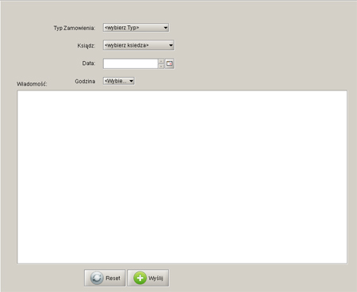
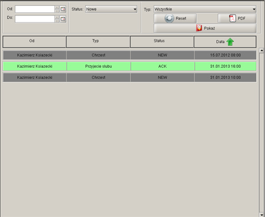
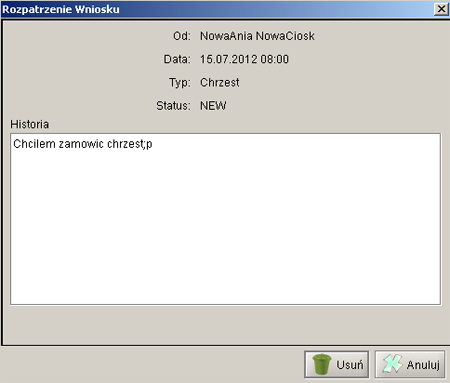
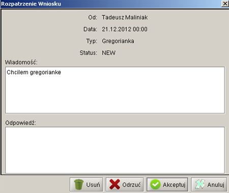

| Parvus Templum 1.0 | |
|
|
Zamówienia |
|
Logowanie Aktualnosci Zamówienia Parafianie Ksieza |
Główną funkcjonalnościa programu jest składanie i zarządzanie zamówieniami dotyczącymi uroczystości kościelnych. Składać zamówienia może każdy posiadacz konta w systemie, ich akceptacją zajmują sie księża, parafianin po złożeniu zamówienia czeka na jego akceptację oraz odpowiedź od księdza. Składanie zamówienia  Typ zamówienia - wybór dostepnych rodzajów uroczystosci Ksiadz - dostepni ksieza w parafii Data - wybór dosty uroczystosci Godzina - wybór dostepnych godzin Wiadomosc - wiadomosc tekstowa do wybranego ksiedza ze szczególami zamówienia Wyslij - zlóz zamówienie Nowo zlozone zamówienie ma status NOWY Przegladanie zamówien Przegladanie zamówien dla ksiezy i parafian prawie sie nie rózni, zostanie wiec opisane na podstawie opcji Parafianina. 
Od/Do - pola wyboru ram czasowych (jezeli zdecydujemy sie na to kryterium to musza byc wypelnione obydwa) Reset - resetuje ustawienia Liste na ekranie mozna sortowc wzgledem czterech pól(Od/Typ/Status/Data), kierunek sortowania pokazuje strzalka. Szczególy zamówien Podwójne klikniecie na któras z pozycji listy skutkuje otworzeniemokna z historia wiadomosci i dodatkowymi opcjami:  Parafianin moze zobaczyc historie zamówienia i odpowiedz ksiedza,usunac moze tylko zamówienia ze statusem ODRZUCONE lub te wykonane (z datawykonania starsza niz dzien terazniejszy)  Ksiadz moze akceptowac/odrzucic/usunac kazde zamówienie, opcjonalnie moze dac odpowiedz parafianinowi |
© Inżynieria programowania
System zarzadzania uroczystosciami koscielnymi